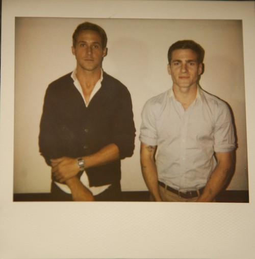
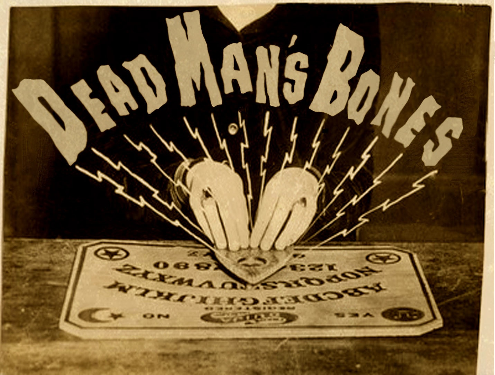

|  | En 2007, Gosling hizo un disco en solitario llamado Put Me In the Car, disponible para descargas en internet. También ese mismo año, Gosling y su amigo, Zach Shields formaron la banda indie rock Dead Man's Bones. Se conocieron por primera vez en 2005, cuando Ryan salía con Rachel McAdams y Zach con su hermana, Kayleen, respectivamente. Concibieron el proyecto como un musical con tema de monstruos pero se establecieron en formar una banda cuando se dieron cuenta que colocar una escena sería demasiado caro.111 Grabaron su debut homónimo con el Coro de Niños de Silverlake Conservatory y aprendieron a tocar todos los instrumentos.111 Gosling contribuyó con voces, guitarra, bajo y cello en el disco. |
El álbum fue lanzado a través de ANTI-Records el 6 de octubre de 2009, y recibió en su mayoría buenas críticas.113 Pitchfork le gustó por un "disco único, llamativo y querible" y reconoció que "mientras que la mayoría de los temas supernaturales son más de fiestas de Halloween de escuela, hay un puñado de momentos realmente inquietantes.114 Spin Magazine sintió que el álbum, "no invierte la regla que los actores hacen dudosos a los músicos pop, pero su colaboración con Zach Shields tiene un encanto innegablemente oscuro." En septiembre de 2009, Gosling y Shields tuvieron una residencia de tres noches en el Teatro Bob Baker Marionette, donde actuaron junto a esqueletos de neón y fantasmas que brillaban.116 Luego hicieron una gira de trece fechas en América del Norte en octubre de 2009, usando un coro de niños local en cada show.117118 En lugar de un acto de apertura, un show de talentos se llevó a cabo cada noche.119 En septiembre de 2010, se presentaron en el festival FYF Festival. En 2011, el actor habló de sus intenciones de grabar un segundo disco. No aparecerá un coro de niños en el siguiente álbum porque "no puedes fumar, no puedes jurar, no puedes emborracharte. Tienes que asegurarte que tengan pizza y vayan al baño. No es de muy rock 'n' roll." |
|

|
| Dead Man's Bones es una banda con el actor, ganador de un Globo de Oro Ryan Gosling (The Notebook, Fracture, Blue Valentine, etc.) y su amigo Zach Shields. Su primer álbum, Dead Man's Bones fue lanzado el 6 de octubre de 2009 a través de la discográfica ANTI- Records. El álbum entero es una colaboración con el Silverlake Conservatory Children’s Choir (Coro de Niños del Conservatorio de Silverlake) fundado por Flea de Los Angeles, California. Gosling actúa bajo el alias de "Baby Goose". |